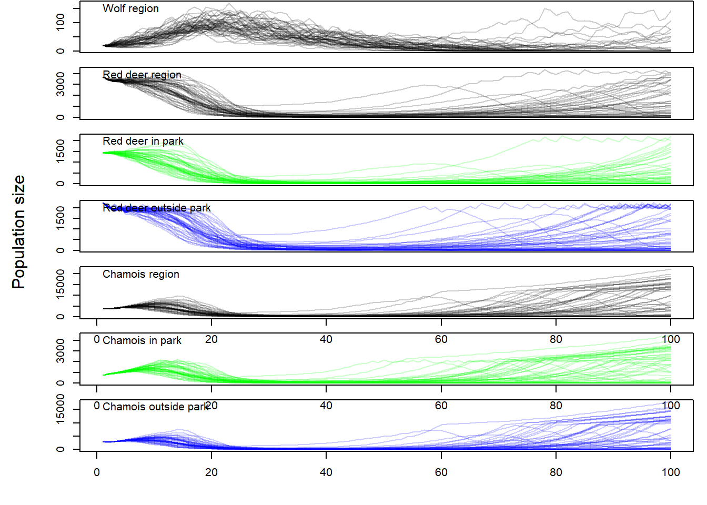

6 Multi-species model
6.1 Model runs
We build pre-breeding population models.
nsim <- 200 # number of simulations
wolfN1 <- matrix(nrow=TT, ncol=nsim)
wolfN2 <- matrix(nrow=TT, ncol=nsim)
wolfN3plus <- matrix(nrow=TT, ncol=nsim)
wolfN <- matrix(nrow=TT, ncol=nsim)
wolfP <- matrix(nrow=TT, ncol=nsim)
deerInN1 <- matrix(nrow=TT, ncol=nsim)
deerInN2 <- matrix(nrow=TT, ncol=nsim)
deerInN3plus <- matrix(nrow=TT, ncol=nsim)
deerOutN1 <- matrix(nrow=TT, ncol=nsim)
deerOutN2 <- matrix(nrow=TT, ncol=nsim)
deerOutN3plus <- matrix(nrow=TT, ncol=nsim)
deerInN <- matrix(nrow=TT, ncol=nsim)
deerOutN <- matrix(nrow=TT, ncol=nsim)
deerN <- matrix(nrow=TT, ncol=nsim)
deerpropIn <- matrix(nrow=TT, ncol=nsim) # proportion of deer from outside that move into the SNP during hunting
chamoisInN1 <- matrix(nrow=TT, ncol=nsim)
chamoisInN2 <- matrix(nrow=TT, ncol=nsim)
chamoisInN3plus <- matrix(nrow=TT, ncol=nsim)
chamoisInN <- matrix(nrow=TT, ncol=nsim)
chamoisOutN1 <- matrix(nrow=TT, ncol=nsim)
chamoisOutN2 <- matrix(nrow=TT, ncol=nsim)
chamoisOutN3plus <- matrix(nrow=TT, ncol=nsim)
chamoisOutN <- matrix(nrow=TT, ncol=nsim)
chamoisN <- matrix(nrow=TT, ncol=nsim)
for(r in 1:nsim){
# starting populations
wolfN1[1,r] <- 7
wolfN2[1,r] <- 4
wolfN3plus[1,r] <- 9
wolfN[1, r] <- wolfN1[1,r] + wolfN2[1,r] +wolfN3plus[1,r]
wolfP[1,r] <- 1
deerInN1[1,r] <- 300
deerInN2[1,r] <- 150
deerInN3plus[1,r] <- 1000
deerInN[1, r] <- deerInN1[1,r] + deerInN2[1,r] +deerInN3plus[1,r]
deerOutN1[1,r] <- 500
deerOutN2[1,r] <- 250
deerOutN3plus[1,r] <- 1500
deerOutN[1, r] <- deerOutN1[1,r] + deerOutN2[1,r] +deerOutN3plus[1,r]
deerN[1,r] <- deerInN[1,r] + deerOutN[1,r]
chamoisInN1[1,r] <- 100
chamoisInN2[1,r] <- 50
chamoisInN3plus[1,r] <- 600
chamoisInN[1, r] <- chamoisInN1[1,r] + chamoisInN2[1,r] +chamoisInN3plus[1,r]
chamoisOutN1[1,r] <- 400
chamoisOutN2[1,r] <- 200
chamoisOutN3plus[1,r] <- 2400
chamoisOutN[1, r] <- chamoisOutN1[1,r] + chamoisOutN2[1,r] +chamoisOutN3plus[1,r]
chamoisN[1, r] <- chamoisInN[1,r] + chamoisOutN[1,r]
for(t in 2:TT){
# Wolf
wolfnrepfemales <- min(c(wolfN3plus[t-1,r]/2, wolfP[t-1,r]*2), na.rm=TRUE) # number of reproducing females
wolfnpups <- FUNwolfnpups(wolfnrepfemales)
wolfS1 <- FUNwolfS1((deerN[t-1,r]+chamoisN[t-1,r])/ungulatesmaxN)
wolfS2 <- FUNwolfS2((deerN[t-1,r]+chamoisN[t-1,r])/ungulatesmaxN)
wolfS3plus <- FUNwolfS3plus((deerN[t-1,r]+chamoisN[t-1,r])/ungulatesmaxN)
wolfN1[t,r] <- rbinom(1, size=wolfnpups, prob=wolfS1)
wolfN2[t,r] <- rbinom(1, size=wolfN1[t-1,r], prob=wolfS2)
wolfN3plus[t,r] <- rbinom(1, size=wolfN2[t-1,r]+wolfN3plus[t-1,r], prob=wolfS3plus)
wolfN[t, r] <- wolfN1[t,r] + wolfN2[t,r] +wolfN3plus[t,r]
# Red deer
deerInnrepfemales <- round((deerInN2[t-1,r]+deerInN3plus[t-1,r])/2) # number of reproducing females
deerOutnrepfemales <- round((deerOutN2[t-1,r]+deerOutN3plus[t-1,r])/2) # number of reproducing females
deerInncalves <- FUNdeerncalves(deerInnrepfemales, npop=deerInN[t-1,r], capacity=2000)
deerOutncalves <- FUNdeerncalves(deerOutnrepfemales, npop=deerOutN[t-1,r], capacity=2000)
propdeerInindiet <- deerInN[t-1,r]/(deerInN[t-1,r]+chamoisInN[t-1,r])
if(is.na(propdeerInindiet)) propdeerInindiet <- 0
propdeerOutindiet <- deerOutN[t-1,r]/(deerOutN[t-1,r]+chamoisOutN[t-1,r])
if(is.na(propdeerOutindiet)) propdeerOutindiet <- 0
deerInS1 <- FUNdeerInS1(wolfN[t-1,r]/wolfmaxN, propindiet=propdeerInindiet)
deerInS2 <- FUNdeerInS2(wolfN[t-1,r]/wolfmaxN, propindiet=propdeerInindiet)
deerInS3plus <- FUNdeerInS3plus(wolfN[t-1,r]/wolfmaxN, propindiet=propdeerInindiet)
deerOutS1 <- FUNdeerInS1(wolfN[t-1,r]/wolfmaxN, propindiet=propdeerOutindiet)
deerOutS2 <- FUNdeerInS2(wolfN[t-1,r]/wolfmaxN, propindiet=propdeerOutindiet)
deerOutS3plus <- FUNdeerInS3plus(wolfN[t-1,r]/wolfmaxN, propindiet=propdeerOutindiet)
deerInN1[t,r] <- rbinom(1, size=deerInncalves, prob=deerInS1)
deerInN2[t,r] <- rbinom(1, size=deerInN1[t-1,r], prob=deerInS2)
deerInN3plus[t,r] <- rbinom(1, size=deerInN2[t-1,r]+deerInN3plus[t-1,r], prob=deerInS3plus)
deerInN[t, r] <- deerInN1[t,r] + deerInN2[t,r] +deerInN3plus[t,r]
deerOutN1[t,r] <- rbinom(1, size=deerOutncalves, prob=deerOutS1)
deerOutN2[t,r] <- rbinom(1, size=deerOutN1[t-1,r], prob=deerOutS2)
deerOutN3plus[t,r] <- rbinom(1, size=deerOutN2[t-1,r]+deerOutN3plus[t-1,r], prob=deerOutS3plus)
deerOutN[t, r] <- deerOutN1[t,r] + deerOutN2[t,r] +deerOutN3plus[t,r]
deerN[t, r] <- deerInN[t,r] + deerOutN[t,r]
# Chamois
chamoisInnrepfemales <- round((chamoisInN2[t-1,r]+chamoisInN3plus[t-1,r])/2) # number of reproducing females
chamoisInncalves <- FUNchamoisncalves(chamoisInnrepfemales, npop=chamoisInN[t-1,r], capacity=2000)
chamoisOutnrepfemales <- round((chamoisOutN2[t-1,r]+chamoisOutN3plus[t-1,r])/2) # number of reproducing females
chamoisOutncalves <- FUNchamoisncalves(chamoisOutnrepfemales, npop=chamoisOutN[t-1,r], capacity=8000)
propchamoisInindiet <- chamoisInN[t-1,r]/(deerInN[t-1,r]+chamoisInN[t-1,r])
if(is.na(propchamoisInindiet)) propchamoisInindiet <- 0
propchamoisOutindiet <- chamoisOutN[t-1,r]/(deerOutN[t-1,r]+chamoisOutN[t-1,r])
if(is.na(propchamoisOutindiet)) propchamoisOutindiet <- 0
chamoisInS1 <- FUNchamoisS1(wolfN[t-1,r]/wolfmaxN, propindiet=propchamoisInindiet)
chamoisInS2 <- FUNchamoisS2(wolfN[t-1,r]/wolfmaxN, propindiet=propchamoisInindiet)
chamoisInS3plus <- FUNchamoisS3plus(wolfN[t-1,r]/wolfmaxN, propindiet=propchamoisInindiet)
chamoisOutS1 <- FUNchamoisS1(wolfN[t-1,r]/wolfmaxN, propindiet=propchamoisOutindiet)
chamoisOutS2 <- FUNchamoisS2(wolfN[t-1,r]/wolfmaxN, propindiet=propchamoisOutindiet)
chamoisOutS3plus <- FUNchamoisS3plus(wolfN[t-1,r]/wolfmaxN, propindiet=propchamoisOutindiet)
chamoisInN1[t,r] <- rbinom(1, size=chamoisInncalves, prob=chamoisInS1)
chamoisInN2[t,r] <- rbinom(1, size=chamoisInN1[t-1,r], prob=chamoisInS2)
chamoisInN3plus[t,r] <- rbinom(1, size=chamoisInN2[t-1,r]+chamoisInN3plus[t-1,r], prob=chamoisInS3plus)
chamoisInN[t, r] <- chamoisInN1[t,r] + chamoisInN2[t,r] +chamoisInN3plus[t,r]
chamoisOutN1[t,r] <- rbinom(1, size=chamoisOutncalves, prob=chamoisOutS1)
chamoisOutN2[t,r] <- rbinom(1, size=chamoisOutN1[t-1,r], prob=chamoisOutS2)
chamoisOutN3plus[t,r] <- rbinom(1, size=chamoisOutN2[t-1,r]+chamoisOutN3plus[t-1,r], prob=chamoisOutS3plus)
chamoisOutN[t, r] <- chamoisInN1[t,r] + chamoisOutN2[t,r] +chamoisOutN3plus[t,r]
chamoisN[t, r] <- chamoisInN[t,r] + chamoisOutN[t,r]
} # close t
} # close r6.2 Results
par(mfrow=c(7,1), mar=c(1,4,0.1,1), oma=c(3,2,0,0))
plot(1:TT, seq(0, max(wolfN), length=TT), type="n", xlab=NA, ylab=NA, xaxt="n")
for(i in 1:nsim) lines(1:TT, wolfN[,i], col=rgb(0,0,0,0.2))
text(1,max(wolfN), adj=c(0,1) , labels="Wolf region")
mtext("Population size",side=2, line=0, outer=TRUE)
plot(1:TT, seq(0,max(deerN), length=TT), type="n", xlab="year", ylab="", xaxt="n")
for(i in 1:nsim) lines(1:TT, deerN[,i], col=rgb(0,0,0,0.2), xaxt="n")
text(1,max(deerN), adj=c(0,1) , labels="Red deer region")
plot(1:TT, seq(0,max(deerInN), length=TT), type="n", xlab="year", ylab="", xaxt="n")
for(i in 1:nsim) lines(1:TT, deerInN[,i], col=rgb(0,1,0,0.2), xaxt="n")
text(1,max(deerInN), adj=c(0,1) , labels="Red deer in park")
plot(1:TT, seq(0,max(deerOutN), length=TT), type="n", xlab="year", ylab="", xaxt="n")
for(i in 1:nsim) lines(1:TT, deerOutN[,i], col=rgb(0,0,1,0.2), xaxt="n")
text(1,max(deerOutN), adj=c(0,1) , labels="Red deer outside park")
plot(1:TT, seq(0,max(chamoisN), length=TT), type="n", xlab="year", ylab="")
for(i in 1:nsim) lines(1:TT, chamoisN[,i], col=rgb(0,0,0,0.2))
text(1,max(chamoisN), adj=c(0,1) , labels="Chamois region")
plot(1:TT, seq(0,max(chamoisInN), length=TT), type="n", xlab="year", ylab="")
for(i in 1:nsim) lines(1:TT, chamoisInN[,i], col=rgb(0,1,0,0.2))
text(1,max(chamoisInN), adj=c(0,1) , labels="Chamois in park")
plot(1:TT, seq(0,max(chamoisOutN), length=TT), type="n", xlab="year", ylab="")
for(i in 1:nsim) lines(1:TT, chamoisOutN[,i], col=rgb(0,0,1,0.2))
text(1,max(chamoisOutN), adj=c(0,1) , labels="Chamois outside park")